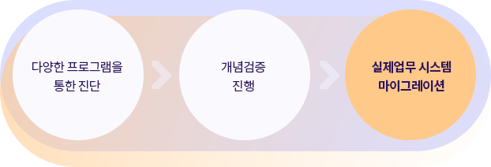
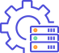
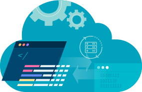

- 열린기술공방 소개
- 마이그레이션
- DevOps . MSA
- 문의하기

인프라 전환의 가장 안정적이고 효율적인 방법

마이그레이션 서비스
최근 고객들은 운영중인 데이터센터를 클라우드로 이동하고자 하는 요구사항에 당면해 있습니다.
이를 위해서는 기존 인프라를 하이브리드 및 멀티 클라우드로 구현하기 위한 아키텍처 기술과,
그 바탕이 되는 오픈소스 기술을 시스템에 구현하기 위한 엔지니어링 기술이 필요합니다. 열린기술공방은 마이그레이션 방법론과
실제 사례를 공유하고, 이를 직접 시연해 보는 학습 방법과 협업을 통해 지식 내재화를 함께 완성해 나갑니다.
1주, 2주, 4주간의 다양한 프로그램을 통해 진단(Assessment), 개념검증(PoC, Proof of Concept)까지 진행 후
실제 업무 시스템을 마이그레이션 해보는 과정으로 진행됩니다.

서비스 소개
열린기술공방은 클라우드로 가기 위한 첫 단계인 오픈소스 인프라로의 전환을 위한 최적화 된 방법을 가이드합니다.
여기에 기반이 되는 클라우드에 대한 기본 지식과 최적의 오픈소스 선택/구성 방법 및 마이그레이션 방법론을 제공합니다.
실제 업무를 프라이빗/퍼블릭 클라우드로 직접 마이그레이션 해봄으로써, 마이그레이션 시의 고려사항에 대해 이해하고 관련된 기술과 지식을 익힐 수 있습니다.
마이그레이션 이후의 향후 운영 방향에 대한 고려사항까지 심도있는 토론 또한 진행됩니다.

기술 내재화
마이그레이션 방법론에 따른
체계적인 방법과 기술 내재화


운영기술
프라이빗/퍼블릭 클라우드 구현
및 전환, 운영기술


핵심 교육서비스
오픈소스 선택 방법과
핵심 오픈소스 교육 서비스


열린기술공방을 통해 마이그레이션 방법론에 따른 체계적인 방법과 이를 직접 수행할 수 있는 역량을 키우세요.
인프라 환경이 클라우드로 옮겨가면서 OS 위주의 마이그레이션은 플랫폼 전략으로 적당하지 않습니다. 운영체제, 미들웨어, 데이터베이스, 프레임워크, 캐시, 대용량 분산처리, HA, EAI, ERP 등 모든 영역의 솔루션 서비스가 이미 클라우드에서 운영되고 있으며, 오픈소스 기술의 조합으로 손쉽게 새로운 서비스 개발이 가능해 졌습니다.
열린기술공방에서 프라이빗/퍼블릭 클라우드 구현 및 전환, 운영 기술에 대한 노하우를 익히세요.
오픈소스컨설팅은 다양한 고객사에 U2L/ U2C/ L2C 마이그레이션을 수행한 경험을 통해, 보다 쉽게 클라우드로의 이행할 수 있는 노하우를 보유하고 있습니다.
기존 인프라의 서버와 업무 영역만 x86, 오픈소스로 변환한다면 클라우드로의 전환은 새로운 업무 부담이 될 것입니다. 기존의 인프라 플랫폼을 변경할 때, 레거시 방식이 아닌 프라이빗/퍼블릭 클라우드가 지향하는 소프트웨어 정의 데이터센터(SDDC, Software-defined data center)로 변화시킨다면 향후 서비스의 확장성과 유연성, 비용 대비 효율면에서 훨씬 더 나은 인프라를 구성할 수 있게 됩니다.
클라우드 선택의 기준과 전환, 구현 방법, 운영 기술을 열린기술공방에서 직접 체험해 보세요.

열린기술공방에서 오픈소스 선택 방법과 구축/운영방안에 대한 기술을 내재화하세요.
오픈소스로 전환한다는 것은 단지 업무 시스템만을 리눅스 기반환경으로 옮기는 것을 의미하지 않습니다. Web/WAS, DB에 따른 클러스터 환경과 공유 파일시스템 환경, 각종 백업 및 모니터링 환경까지 전체적인 인프라의 변화를 의미합니다.
오픈소스는 특성상 여러 기술에 대한 종합적인 이해가 필요합니다. 오픈소스컨설팅은 다양한 오픈소스 기술을 유기적으로 연결하여 복잡한 인프라를 구성한 경험이 있으며, 여기서 쌓인 노하우를 같이 공유함으로써 기술 내재화에 하는데 도움을 드립니다.
열린기술공방과의 협업을 통해 최적화된 인프라 환경을 구축하세요.
직접 샘플링하여 수행
고객사의 업무 시스템을
직접 샘플링하여마이그레이션 수행
1:1 전문가 제공
아키텍처 및 마이그레이션
설계, 구축, 이전에 대한
1:1 전문가 제공

오픈소스 교육
마이그레이션에 필요한
오픈소스 교육 제공
역량 개발 가능
핸즈온 경험을 통해
클라우드 엔지니어로서
역량 개발 가능
Migration 방법론
열린기술공방이 제안하는 마이그레이션 방법론
서비스 관련 기술자료 다운로드

클라우드 네이티브 협업
많은 기업들이 오픈 인프라와 클라우드
네이티브 전략을 시도하고 있지만, 기술보다
중요한건 의사소통과 협업/공유 문화입니다.
네이티브 전략을 시도하고 있지만, 기술보다
중요한건 의사소통과 협업/공유 문화입니다.

애자일 & 스프린트
Atlassian 본사의 솔루션 엔지니어인 'Scott'이
전하는 신속하게 변하는 IT팀을 위한 인력,
프로세스, 제품 전반에 걸친 Atlassian의
전략을 확인해 보세요.
전하는 신속하게 변하는 IT팀을 위한 인력,
프로세스, 제품 전반에 걸친 Atlassian의
전략을 확인해 보세요.

Atlasian, DevOps and ITSM
오픈소스컨설팅이 개최한 Atlassian meets
DevOps and ITSM 세미나 발표자료를
공유합니다. Atlassian 제품을 실제로 도입한
카카오의 활용 사례를 직접 확인해 보세요!
DevOps and ITSM 세미나 발표자료를
공유합니다. Atlassian 제품을 실제로 도입한
카카오의 활용 사례를 직접 확인해 보세요!
Let’s start
with your project together.
열린기술공방의 문은 언제든지 열려 있습니다.